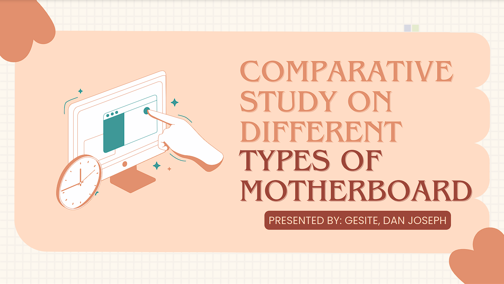

A motherboard is the main circuit board that connects and manages communication between a computer's components like the CPU, RAM, and peripherals. Motherboards come in various types, including the ATX, which is common in desktops with modern features, and the BTX, designed for better cooling in high-performance systems. The Extended-ATX is larger and used in servers, while the Micro-ATX is smaller and affordable. Mini ITX is ultra-compact for small PCs, and the Mini-ATX offers a balance of size and functionality. Pico BTX is a very compact board for space-saving systems. Standard-ATX offers versatility with multiple expansion options.
Click the Image to proceed